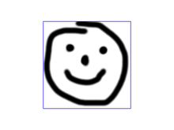

Surface reads Heightmap information from text or image files.
Parameters
The format for text based heightmaps is a matrix of numbers that represent the height for a specific point. Rows are mapped to the Y-axis, columns to the X axis. The numbers must be separated by spaces or tabs. Empty lines and lines starting with a # character are ignored.
[Note: Requires version 2015.03]
Currently only PNG images are supported. Alpha channel information of the image is ignored and the height for the pixel is determined by converting the color value to Grayscale using the linear luminance for the sRGB color space (Y = 0.2126R + 0.7152G + 0.0722B). The gray scale values are scaled to be in the range 0 to 100.
Example 1:
//surface.scad surface(file = "surface.dat", center = true, convexity = 5); %translate([0,0,5])cube([10,10,10], center =true);
#surface.dat 10 9 8 7 6 5 5 5 5 5 9 8 7 6 6 4 3 2 1 0 8 7 6 6 4 3 2 1 0 0 7 6 6 4 3 2 1 0 0 0 6 6 4 3 2 1 1 0 0 0 6 6 3 2 1 1 1 0 0 0 6 6 2 1 1 1 1 0 0 0 6 6 1 0 0 0 0 0 0 0 3 1 0 0 0 0 0 0 0 0 3 0 0 0 0 0 0 0 0 0
Result:
Example 2
// example010.dat generated using octave: // d = (sin(1:0.2:10)' * cos(1:0.2:10)) * 10; // save("example010.dat", "d"); intersection() { surface(file = "example010.dat", center = true, convexity = 5); rotate(45, [0, 0, 1]) surface(file = "example010.dat", center = true, convexity = 5); }
Example 3:
[Note: Requires version 2015.03]
// Example 3a scale([1, 1, 0.1]) surface(file = "smiley.png", center = true);
// Example 3b scale([1, 1, 0.1]) surface(file = "smiley.png", center = true, invert = true);
Example 3: Using surface() with a PNG image as heightmap input.

Input image
Example 3a: surface(invert = false)
Example 3b: surface (invert = true)
Example 4:
// Example 4 surface(file = "BRGY-Grey.png", center = true, invert = false);
PNG Test File
3D Surface
Created with the Personal Edition of HelpNDoc: Free HTML Help documentation generator